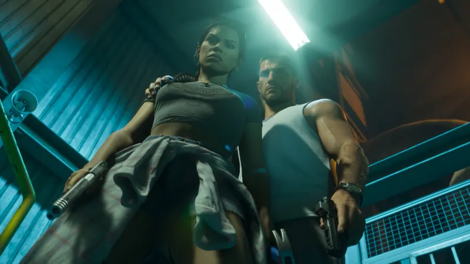

¿Quién pone voz a Jason y Lucia? Actores y personajes de GTA 6
Respuesta corta
Según los créditos oficiales de Rockstar, Jason Duval es Dylan Rourke y Lucia Caminos es Manni L. Perez. En el reparto también están Stephen Root (Brian Heder), Bobby Moynihan (Cal) y Lexie Shoaibi (Mandy). Michael Hollick, el actor de Niko Bellic en GTA IV, aparece como «The Hitman».

Rockstar publicó los créditos completos de GTA 6 en su web oficial el día del lanzamiento. Las voces y las capturas de movimiento son de los mismos intérpretes, según Screen Rant.
Jason y Lucia
- Jason Duval: Dylan Rourke. Según Screen Rant, es su primer videojuego; se le ha visto en series como Station 19, Modern Family o 9-1-1: Lone Star.
- Lucia Caminos: Manni L. Perez. No es su debut en la saga: según Screen Rant, ya salió como clienta de discoteca en GTA V y GTA Online, y ha aparecido en The Blacklist, Jessica Jones o Chicago P.D.
Quiénes son en la historia: Jason y Lucia, los protagonistas.
Reparto principal
Una selección de los créditos oficiales, con los personajes que aparecen en esta web:
| Personaje | Actor o actriz |
|---|---|
| Jason Duval | Dylan Rourke |
| Lucia Caminos | Manni L. Perez |
| Cal Hampton | Bobby Moynihan |
| Brian Heder | Stephen Root |
| Lori Heder | Orlagh Cassidy |
| Donnie | Brad Carter |
| Mandy | Lexie Shoaibi |
| Boobie Ike | Mike Forbs |
| Dre'Quan | Naiqui Macabroad |
| Raul Bautista | Manny Perez |
| Mia Caminos | Roselyn Sanchez |
| Bret Vogel | Jariko Denman |
| Moses «Mo» Watkins | Aaron Morton |
| Randy Kozlov | Serge Didenko |
| Pilot Pete | Carl Palmer |
| Vicki | Taryn Manning |
| Kordell Grant | Michael Jai White |
| DWNPLY | Denzel Curry |
| Arnold | Caesar Samayoa |
| Shirley Baker | Carolee Carmello |
| The Hitman | Michael Hollick |
Los créditos incluyen también cameos de músicos como Kodak Black, que se interpreta a sí mismo.
¿Sale Niko Bellic en GTA 6?
No hay confirmación. Lo que sí hay: los créditos oficiales incluyen a Michael Hollick, el actor que dio vida a Niko Bellic en GTA IV, con el papel de «The Hitman» (el sicario). Rockstar no dice que ese personaje sea Niko, así que no lo damos por hecho. GameSpot, por su parte, ha encontrado en el juego unas memorias de un antiguo mafioso de Liberty City que aluden a 2008, el año de GTA IV.
¿Y Mandy?
La pone voz Lexie Shoaibi. Quién es y si se puede tener algo con ella: Mandy en GTA 6.
Fuentes
- Rockstar Games: créditos oficiales de GTA VI
- Screen Rant: el reparto completo de GTA 6 (19-11-2026)
- GameSpot: easter eggs de GTA 6 (18-11-2026)
Resumen redactado por 6 Estrellas a partir de las fuentes citadas, revisadas el 20 de noviembre de 2026. Si ves un error, cuéntanoslo desde Quiénes somos.